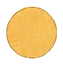
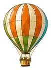
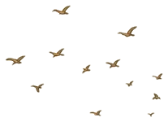
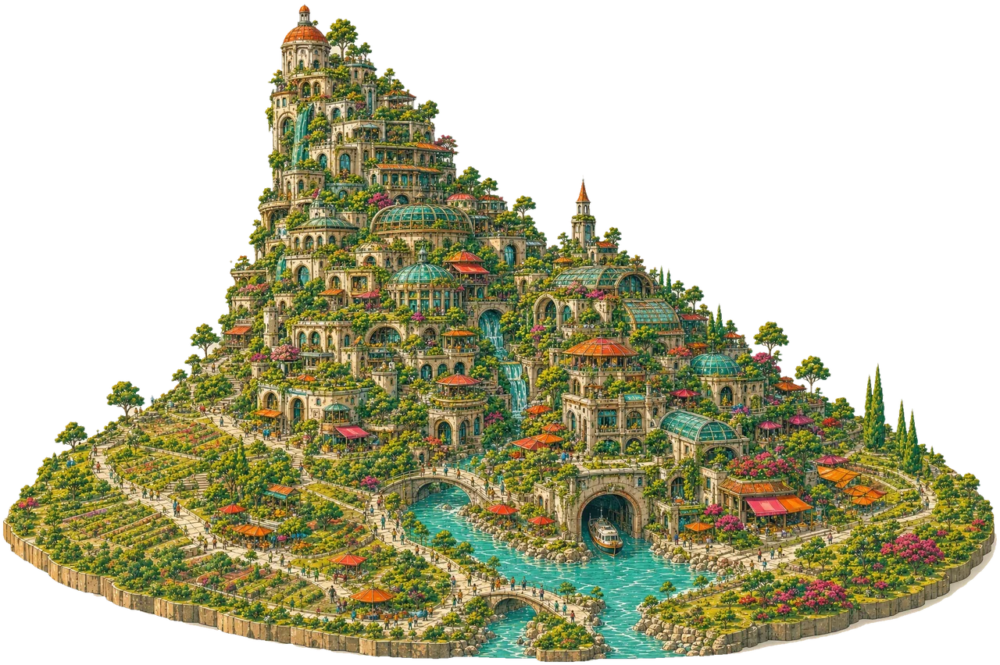

A project, resource and portfolio by Pierre-Antoine Descoteaux
Everything I've gathered about living closer together.
Scroll into the tower
You are in the tower. Where do you want to go?
arrival mock v2